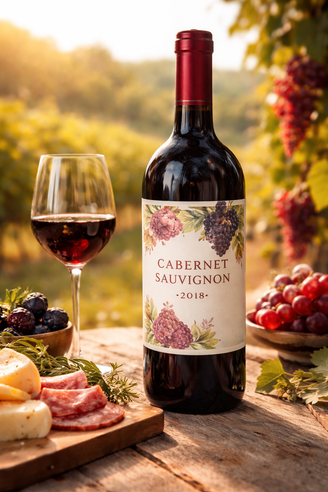
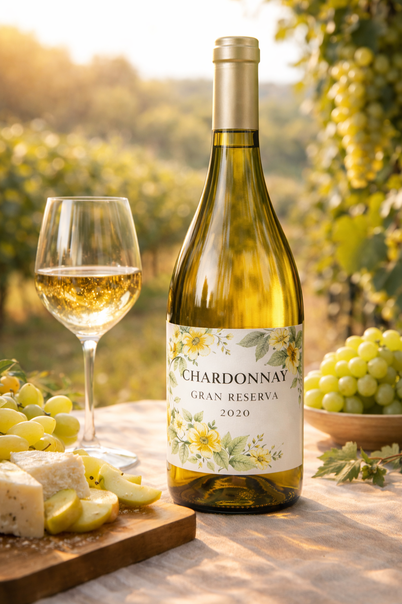
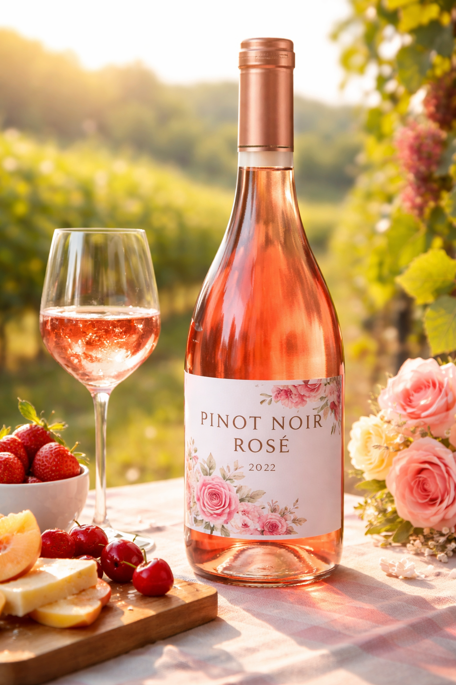

2018
Cabernet Sauvignon 2018
Vale dos Vinhedos
Notas de frutas negras, carvalho e especiarias.
Para acessar este site, confirme que você tem 18 anos ou mais.
Beba com moderação. Proibido para menores de 18 anos.

Nossa jornada começou com uma paixão simples: extrair a mais pura essência da terra. Ao longo de décadas, cultivamos não apenas vinhedos, mas um profundo respeito pelo tempo e pela natureza.
Cada garrafa que produzimos carrega a história de gerações dedicadas à excelência, unindo técnicas seculares às mais modernas inovações enológicas para entregar uma experiência única.

Descubra a expressão máxima do nosso terroir em cada safra.

Notas de frutas negras, carvalho e especiarias.

Toques de baunilha, abacaxi e acidez equilibrada.

Fresco, com aromas de morango e pétalas de rosa.

"O vinho é a prova mais elegante de que Deus nos ama e quer que sejamos felizes."— Benjamin Franklin
"Uma experiência inesquecível. Os vinhos têm uma profundidade que raramente encontramos no Brasil."
"A melhor degustação que já fiz. O Cabernet 2018 é simplesmente extraordinário — um vinho que conta uma história."
"Ambiente elegante e vinhos excepcionais. A equipe tem um conhecimento impressionante sobre cada rótulo."
Anos de tradição
Rótulos premiados
Visitantes por ano
Países exportados